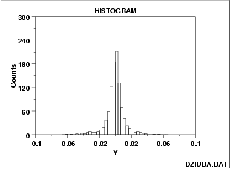

|
1. Exploratory Data Analysis 1.3. EDA Techniques 1.3.3. Graphical Techniques: Alphabetic 1.3.3.13. Histogram 1.3.3.13.3. Histogram Interpretation: Symmetric, Non-Normal, Long Tailed |
|
|
 |
|
|
For a symmetric distribution,
the "body" of a distribution
refers to the "center" of
the distribution--commonly that region of the distribution
where most of the probability resides--the "fat" part
of the distribution.
The "tail" of a distribution refers to the extreme regions
of the distribution--both left and right.
The "tail length" of a distribution is a term which
indicates how fast these extremes approach zero.
For a short-tailed distribution, the tails approach zero very fast. Such distributions commonoly have a truncated ("sawed-off") look. The classical short-tailed distribution is the uniform (= rectangular) distribution in which the probability is constant over a given range and then drops to zero everywhere else--we would speak of this as having no tails, or extremely short tails. For a moderate-tailed distribution, the tails dive to zero in a "moderate" fashion. The classical moderate-tailed distribution is the norma (= Gaussian) distribution. For a long-tailed distribution, the tails dive to zero very slowly--and hence one is apt to see probability a long way from the body of the distribution. The classical long-tailed distribution is the Cauchy distribution. In terms of tail-length, the histogram shown above would be characteristic of a "long-tailed" distribution, such as the Cauchy distribution. The "who-cares" of all of the above tail-length discussion is the little-known statistical fact that the choice of the optimal (unbiased and most precise) estimator for location for the center of a distribution is heavily dependent on the tail-length of the distibution. The common choice of taking n observations and using the calculated sample mean as our best estimate for the center of the distribution makes perfect sense for the normal distribution (moderate-tailed), but is a poor choice for the uniform distribution (short-tailed), and is a horrible choice for the Cauchy distribution (long-tailed). Although for the normal distribution, the sample mean is as "tight" (precise) an estimator as we can get, for the uniform and Cauchy distributions, the sample mean is unduly noisy (variable)--other location estimators exist which give much better (more precise) estimates of location--for the same amount of data. If you have a sample of n observations from a uniform distribution, then do not use the sample mean; do use the sample midrange:
The resulting calculated value will be much closer to the truth (the population mean). If you have a Cauchy distribution, then also do not use the sample median; do instead use the sample median:
Recommended Next Step |
|